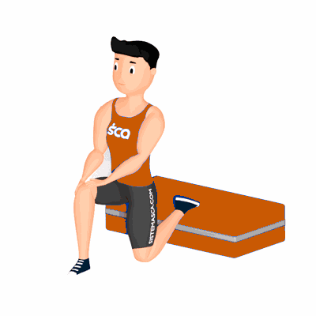

Avanço com Apoio e Anteriorização do Quadril

O exercício tem como objetivo a mobilização e fortalecimento do quadril, que auxilia na prática de atividades físicas e atividades diárias.
Ficha Técnica
Tipo: Funcional
Grupo Muscular: Glúteo
Aparelho: Nenhum
Músculos: Nenhum
Como realizar
- Fique em posição de afundo;
- Apoie o dorso do pé que está atrás em um step ou espaldar;
- Inicie o movimento realizando uma anteriorização do quadril sem permitir que o calcanhar da perna da frente desencoste do solo;
- Retorne a posição inicial e ao terminar as repetições, repita o movimento invertendo a posição das pernas.
 RC STORE
RC STORE